import pandas as pd
import matplotlib.pyplot as plt
import seaborn as snsIntroduction to Linear Regression
IN2039: Data Visualization for Decision Making
Agenda
Introduction
Relationship between two numerical variables
Simple linear regression
Local regression
Loading the Libraries
Let’s import the pandas, matplotlib, and seaborn in Google Colab.
Example
We will use data from 392 cars, including miles per gallon, number of cylinders, horsepower, weight, acceleration, year, origin, and other variables.
The data is in the file “auto_dataset.xlsx”.
auto_data = pd.read_excel("auto_dataset.xlsx")
# Set categorical variable.
auto_data[['origin']] = auto_data[['origin']].astype('category')| mpg | cylinders | displacement | horsepower | weight | acceleration | year | origin | car name | |
|---|---|---|---|---|---|---|---|---|---|
| 0 | 18.0 | 8 | 307.0 | 130 | 3504 | 12.0 | 70 | American | chevrolet chevelle malibu |
| 1 | 15.0 | 8 | 350.0 | 165 | 3693 | 11.5 | 70 | American | buick skylark 320 |
| 2 | 18.0 | 8 | 318.0 | 150 | 3436 | 11.0 | 70 | American | plymouth satellite |
| 3 | 16.0 | 8 | 304.0 | 150 | 3433 | 12.0 | 70 | American | amc rebel sst |
Relationship Between Two Numerical Variables
Principle 1: Formulate the question or message
Questions we can answer with simple linear regression:
Is there a relationship between a response variable and predictors?
How strong is the relationship?
What is the uncertainty?
How precisely can we predict a future outcome?
Is there a relationship between a car’s weight and its miles per gallon?
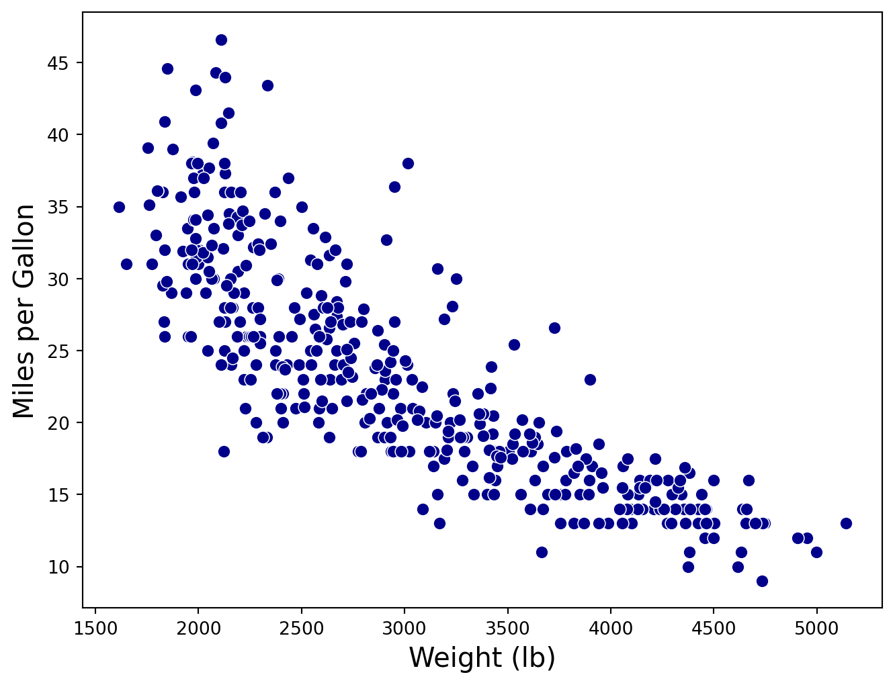
Regression Problem
Objetive: Objective: Find the best function \(f(X)\) of the predictor \(X\) that describes the response \(Y\).
. . .
Mathematically, we want to establish the following relationship:
\[ Y = f(X) + \epsilon, \]
where \(\epsilon\) is a natural (random) error.
- In practice, it is very difficult to know the true structure of the function \(f(X)\).
The best we can do is construct an approximation (function) \(\hat{f}(X)\).
There are several strategies to build \(\hat{f}(X)\), one of the most common is:
- Define a simple “structure” or “formula.”
- Estimate the elements of the “formula” using the data.
Simple Linear Regression
Linear Regression Model
A very common function \(f(X)\) to predict a response \(Y\) is the linear regression model.
Its mathematical form is:
\[ \hat{Y}_i = \hat{\beta}_0 + \hat{\beta}_1 X_i, \]
- Where \(i\) is the index of the \(n\) observations, and
- \(\hat{Y}_i\) is the predicted value of the actual response \(Y_i\) associated with a predictor value \(X_i\).
- The values \(\hat{\beta}_0\) and \(\hat{\beta}_1\) are called coefficients of the model.
Principle 2: Turn data into information
The values of \(\hat{\beta}_0\) and \(\hat{\beta}_1\) are obtained using the data. Specifically, the formulas for the coefficients are:
\[\hat{\beta}_1 = \frac{ \sum_{i=1}^{n} (Y_i - \bar{Y}) (X_i - \bar{X}) }{\sum_{i=1}^{n} (X_i - \bar{X})^2} \text{ y } \hat{\beta}_0 = \bar{Y} - \hat{\beta}_1 \bar{X},\]
where \(\bar{X} = \sum_{i=1}^n X_i/n\) and \(\bar{Y} = \sum_{i=1}^n Y_i/n\).
These formulas are derived from the method of least squares.
Fitting Regression Models in R
To fit a linear regression model, we use the regplot() in seaborn.
plt.figure(figsize=(5.8, 3.8))
sns.regplot(data=auto_data, x="weight", y="mpg")
plt.xlabel("Weight (lb)")
plt.ylabel("Miles per Gallon (mpg)")
plt.show()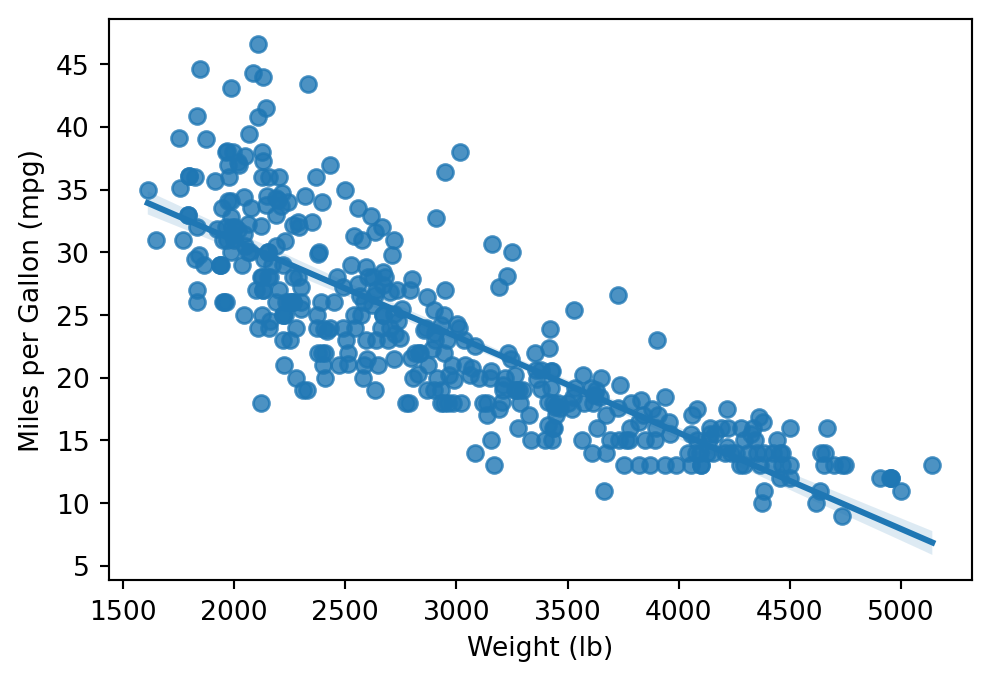
We can modify the line type, thickness, and color using the arguments linestyle, linewidth, and color, respectively, in the line_kws argument of the function.
plt.figure(figsize=(8, 6))
sns.regplot(data=auto_data, x="weight", y="mpg",
scatter_kws={"color": "blue"},
line_kws={"linestyle": "-", "linewidth": 3, "color": "red",
"label": "Linear Fit"})
plt.xlabel("Weight (lb)")
plt.ylabel("Miles per Gallon (mpg)")
plt.legend()
plt.show()For Our Example
\(\hat{Y}_i = 46.32 -0.0076 X_i\)
The Formula
\(\text{mpg}_i = 46.32 - 0.0076 \times \text{peso}_i\)
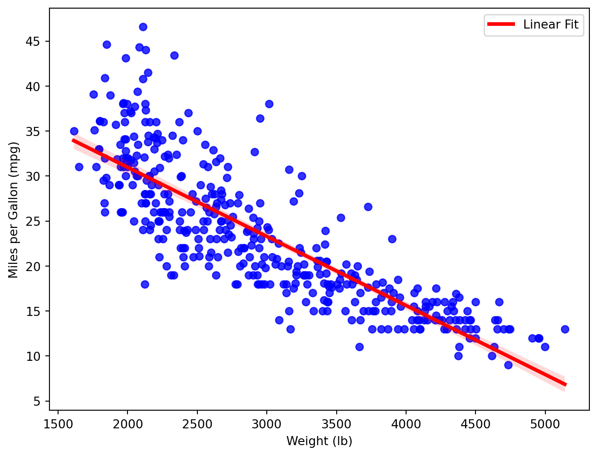
Interpretation of the Coefficients
What does \(\hat{\beta}_0 = 46.32\) mean?
. . .
\(\hat{\beta}_0\) is the average response value when \(X_i = 0\).
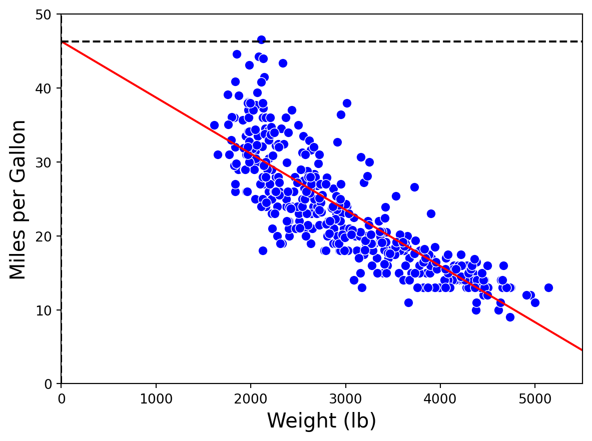
Does \(\hat{\beta}_0 = 46.32\) make sense?
. . .
No! Because there are no cars with a weight of 0.
What does \(\hat{\beta}_1 = - 0.0076\) mean?
. . .
\(\hat{\beta}_1\) is the average change in the response when \(X_i\) increases by one unit.
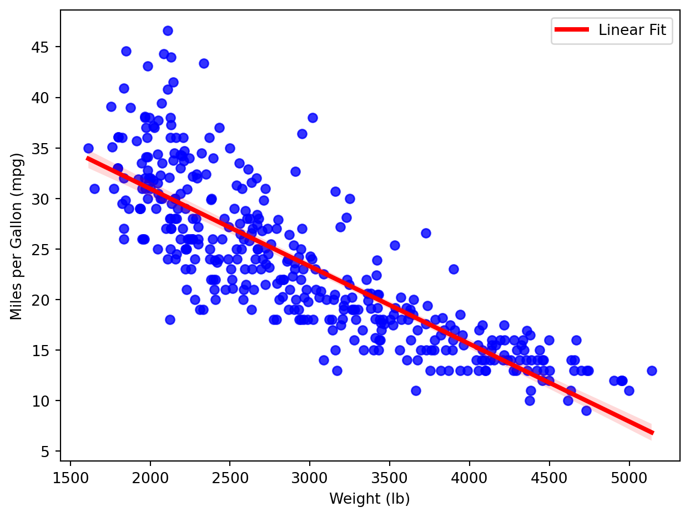
Interpretation of \(\hat{\beta}_1\)
For every extra pound in a car’s weight, the car has an average reduction of 0.0076 miles per gallon.
Do all points fall exactly on the line?
. . .
No! The model has errors.
. . .
Technically, the error of the i-th observation is given by: \(e_i = Y_i - \hat{Y}_i = Y_i - \hat{\beta}_0 - \hat{\beta}_1 X_i\).
In fact …
The formulas for \(\hat{\beta}_0\) and \(\hat{\beta}_1\) are obtained by minimizing the sum of squared errors.
Specifically, the least squares method finds \(\hat{\beta}_0\) and \(\hat{\beta}_1\) by minimizing the function:
\[\begin{align} g(\hat{\beta}_0, \hat{\beta}_1) & = \sum_{i=1}^{n} (e_{i})^2 = \sum_{i=1}^{n} (Y_i - (\hat{\beta}_0 + \hat{\beta}_1 X_i ))^2. \end{align}\]
Inspecting the errors
The behavior of the errors (\(e_i\)’s) indicates whether the model is correct or not. If the model is correct, the errors should behave as follows:
- On average, they should be around 0 for each predicted value \(\hat{Y}_i\).
- They should have constant dispersion around each predicted value \(\hat{Y}_i\).
- They should be independent of each other, meaning they should not be related.
Graphical analysis of errors
To evaluate these behaviors, we use two scatter plots of the errors:
Horizontal Axis = Errors and Vertical Axis = Predictions. This plot helps validate the first two assumptions (errors around 0 and constant dispersion).
Eje Horizontal = Errores y Eje Vertical = Tiempo en que se tomó la observación. Está gráfica permite validar el tercer supuesto (independencia).
statsmodels library
- statsmodels is a powerful python library for statistical modeling, data analysis, and hypothesis testing.
- It provides classes and functions for estimating statistical models.
- It is built on top of libraries such as NumPy, SciPy, and pandas
- https://www.statsmodels.org/stable/index.html

Load the libraries
Let’s import statsmodels into Python
import statsmodels.api as smFit a linear model
To fit a linear model in statsmodels, we first split the data set into a vector with the values of the predictor only, and a vector with the response values.
# Matrix with predictors.
X = auto_data['weight']
# Add intercept.
X = sm.add_constant(X)
# Matrix with response.
Y = auto_data['mpg']We also must include a vector of ones to the predictors to account for the intercept.
Next, we use the functions OLS() and fit() from statsmodels.
# Create linear regression object
regr = sm.OLS(Y, X)
# Train the model using the training sets
linear_model = regr.fit()To show the estimated coefficients, we use the argument params of the linear_model object created previously.
# The estimated coefficients.
print(linear_model.params)const 46.317364
weight -0.007677
dtype: float64The elements in the vector above are the estimates \(\hat{\beta}_0 = 46.317\) and \(\hat{\beta}_1 = -0.00767\).
Residuals and fitted values
To create the plots for the residuals, we need the predicted values (\(\hat{Y}_i\)’s) of the response and the residuals (\(e_i\)’s) first. To this end, we use the commands below.
# Make predictions using the the model
Y_pred = linear_model.fittedvalues
# Calculate residuals.
residuals = linear_model.residConstant dispersion
Code
# Residual vs Fitted Values Plot
plt.figure(figsize=(7.5, 5.5))
sns.scatterplot(x = Y_pred, y = residuals, color="darkblue", s = 50)
plt.axhline(y=0, color='red', linestyle='--')
plt.xlabel('Fitted (predicted) Values', fontsize=15)
plt.ylabel('Residuals', fontsize=15)
plt.yticks(fontsize=12)
plt.xticks(fontsize=12)
plt.show()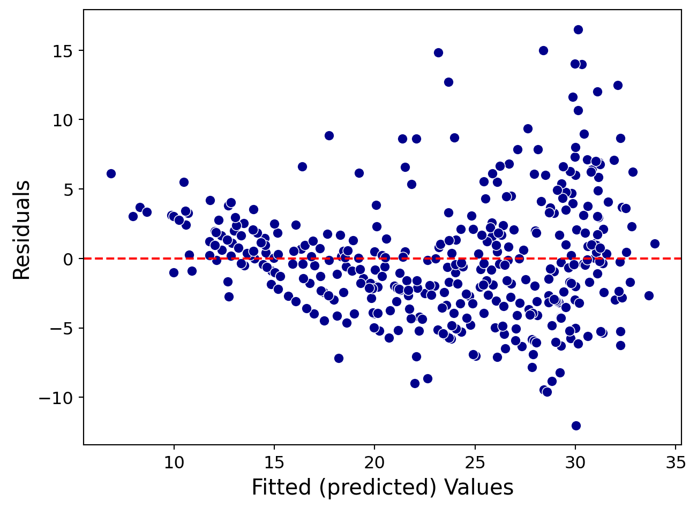
Independent errors
Code
# Residuals vs Time (Case) Plot
plt.figure(figsize=(7.5, 5.5))
sns.scatterplot(x = range(len(auto_data)), y = residuals,
color="darkblue", s = 50)
plt.axhline(y=0, color='red', linestyle='--')
plt.xlabel('Time', fontsize=15)
plt.ylabel('Residuals', fontsize=15)
plt.yticks(fontsize=12)
plt.xticks(fontsize=12)
plt.show()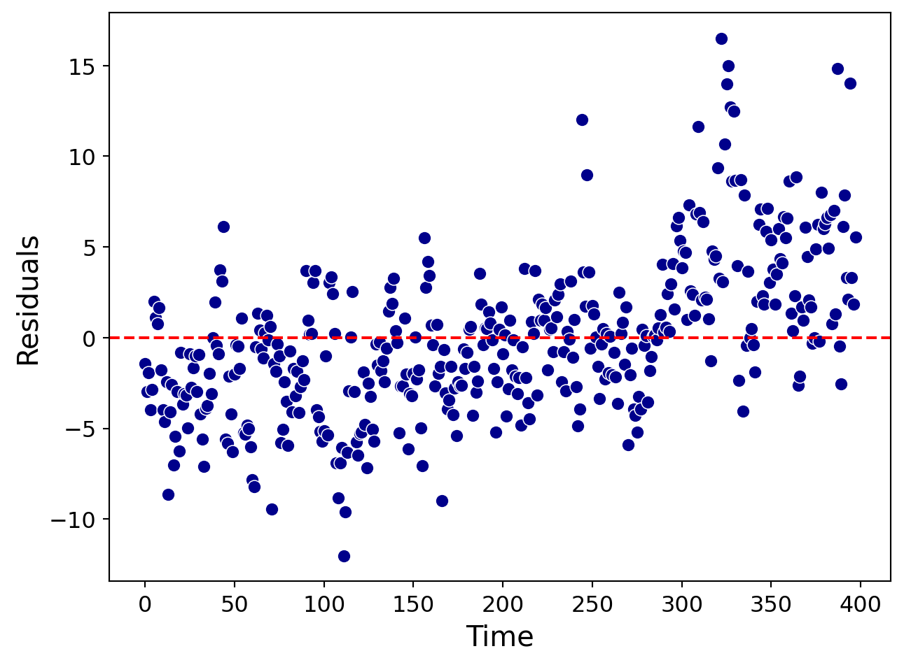
If both assumptions are validated, then the model can be used to predict the response for new observations and to check if there is a significant relationship between \(Y\) and \(X\).
You have explored about linear regression in IN1002B.
Local Regression
Local regression
This is a modern alternative to the simple linear regression model for capturing complex relationships between two variables.
Basic Idea: It fits linear regression models to small subsets of the data. These subsets consist of observations that are close to each other.
The most common method for fitting a local regression model is LOESS. We will omit the details of this method here since they require advanced statistical concepts.
In Python, we fit a local regression by setting the lowess argument to True in the regplot() function.
plt.figure(figsize=(7, 5))
sns.regplot(data=auto_data, x="weight", y="mpg", lowess=True)
plt.show()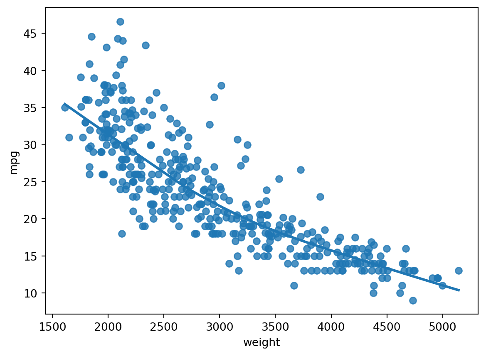
We can change the color, thickness, and line type using the color, linewidth, and linestyle,arguments in the line_kws argument function.
plt.figure(figsize=(6, 4))
sns.regplot(data=auto_data, x="weight", y="mpg", scatter=True, lowess=True,
line_kws={"color": "red", "linewidth": 2, "linestyle": "--"})
plt.show()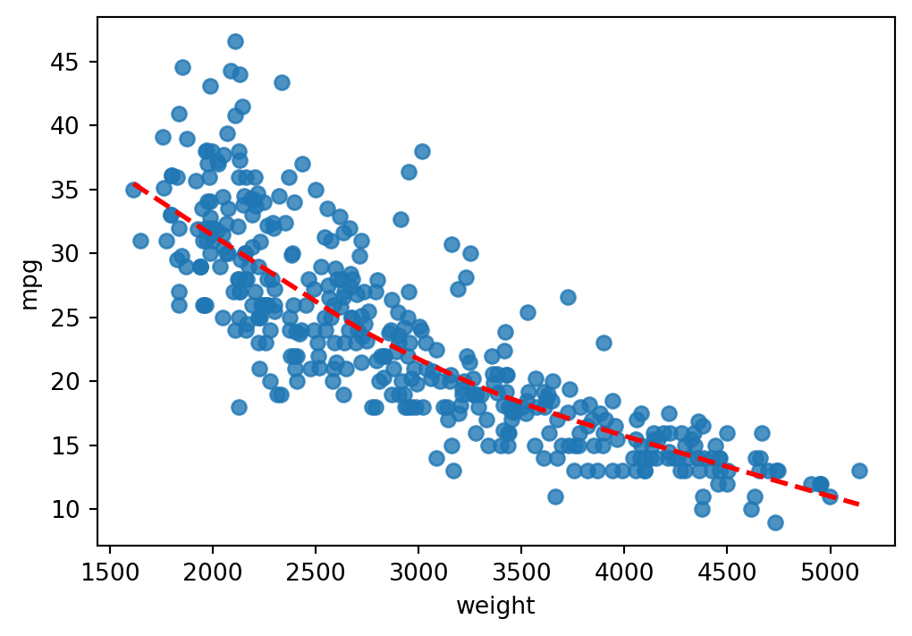
Another example
Let’s consider the relationship between car acceleration (acceleration) and the total volume of all engine cylinders (displacement).
plt.figure(figsize=(5.5, 3.5))
sns.scatterplot(data=auto_data, x="displacement", y="acceleration")
plt.show()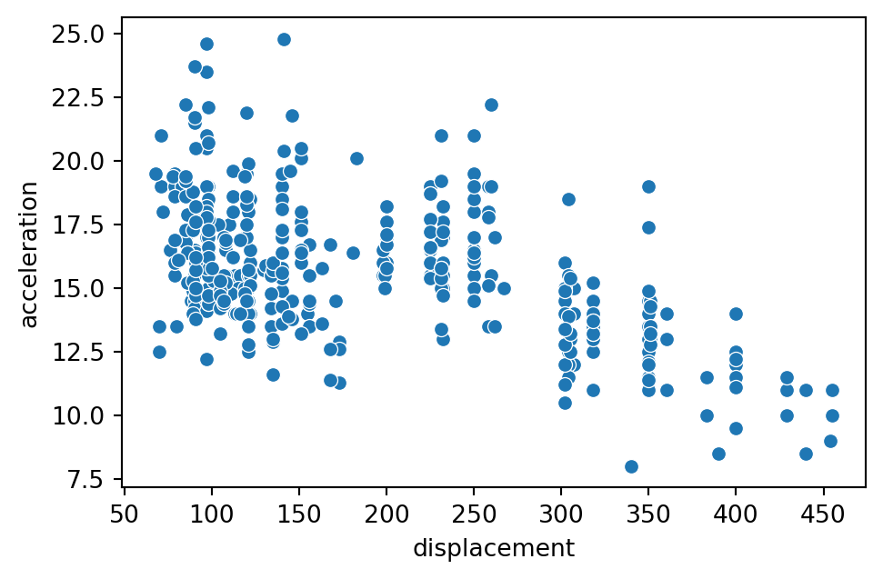
Linear regression
plt.figure(figsize=(7, 5))
sns.regplot(data=auto_data, x="displacement", y="acceleration",
scatter=True)
plt.show()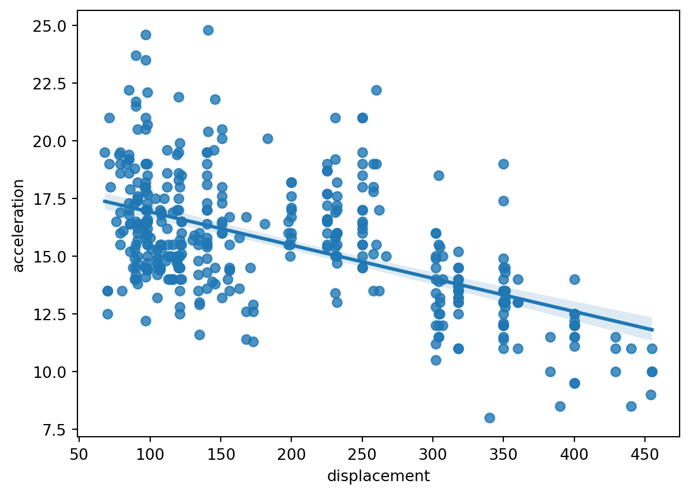
Local regression
plt.figure(figsize=(7, 5))
sns.regplot(data=auto_data, x="displacement", y="acceleration",
scatter=True, lowess = True)
plt.show()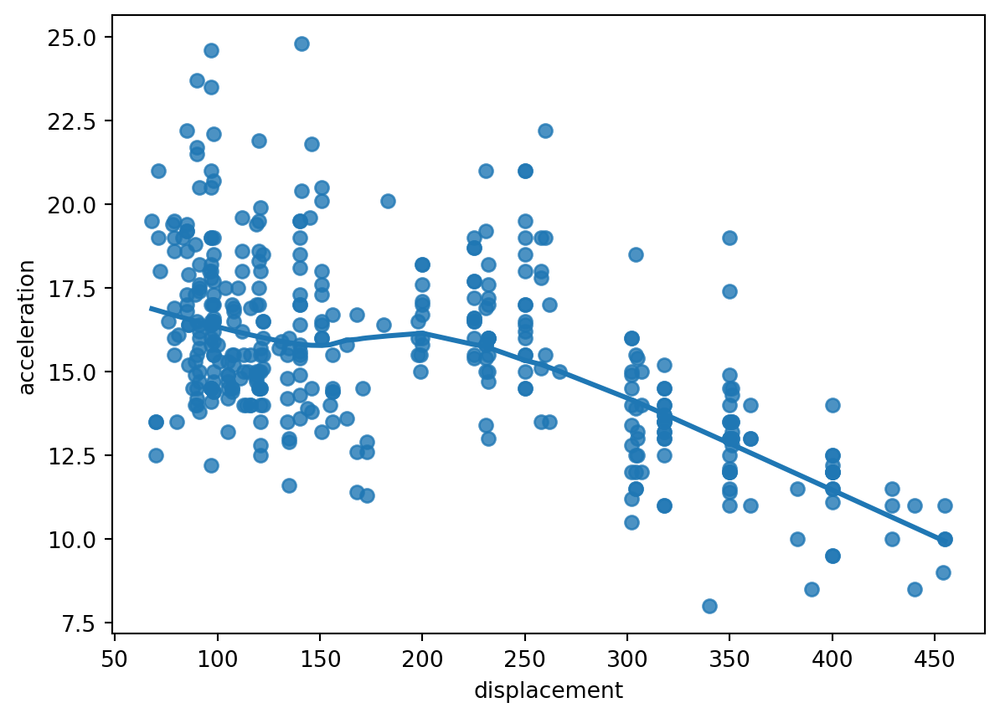
Discussion
- The simple linear regression model is easy to interpret due to its structure:
\[ \hat{Y}_i = \hat{\beta}_0 + \hat{\beta}_1 X_i. \]
- However, it may be too rigid to capture complex relationships between two variables.
Local regression is flexible and allows capturing complex relationships between two variables.
However, it has a low level of interpretability because it does not provide an explicit equation to relate the predictor \(X\) to the response \(Y\).
Comments
The two plots do not validate the assumptions of the linear regression model.
There are methods to correct this, but we will not cover them here.
If both assumptions are not validated, then the linear regression model is used only as a trend line or a reference for the data.